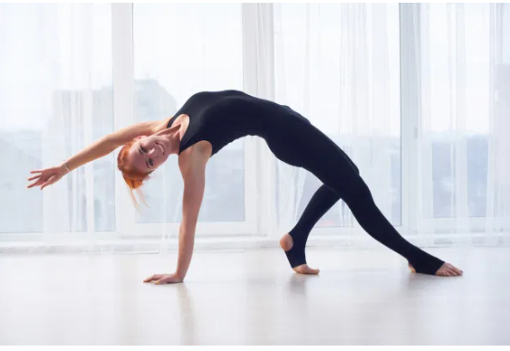
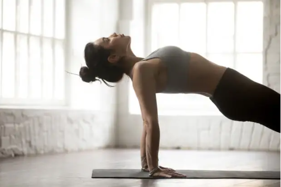

Merhaba
Hoş Geldiniz! Bu yoga sitesi, bedeninizi, zihninizin huzurunu ve ruhunuzu beslemek için ihtiyaç duyduğunuz kaynakları sunmayı amaçlamaktadır.
Yoga pratikleri, nefes çalışmaları, meditasyon teknikleri ve yaşam tarzı önerileri gibi konularda sizlere kapsamlı bilgi sağlamayı hedefliyoruz. İster bir acemi olun, ister deneyimli bir yogi, sitemizde size uygun olan bir şeyler bulacağınıza eminiz.
Learn moreCamatkarasana | Vahşi Şey Duruşu
Camatkarasana göğsünüzü, omuzlarınızı, kalça fleksörlerinizi ve akciğerlerinizi açarken aynı anda sırtınızın üst kısmında ve omuzlarınızda güç oluşturmaya çalışır. Vahşi şey pozu veya Sanskritçede camatkarasana , hem gücü hem de dengeyi zorlar. Uzmanlar, depresyon ve yorgunluk için rahatlama sağlayabileceğine inanıyor.
Viparita Virabhadrasana | Ters Savaşçı Pozu

Viparita Virabhadrasana, aynı zamanda derin bir yan esneme sağlayan ayakta geriye eğilmiş bir asanadır. Poz, Virabhadrasana B’nin (savaşçı iki poz) bir varyasyonu olarak kabul edilir.
Purvottanasana | Yukarı Tahta Pozu
Purvottanasana ayak bileklerinizi, omuzlarınızı ve göğsünüzü esnetirken kollarınız ve bileklerinizin yanı sıra bacaklarınızda güç oluşturur. Bilek yaralanması yaşayan herkes bu pozdan kaçınmalıdır. Boyun yaralanması yaşayan bireyler, bu pozda boynunu desteklemek için bir duvar veya sandalye oturağı kullanmalıdır.
Parivritta Parsvakonasana | Çevrilmiş Uzatılmış Yan Açı

Parivritta Parsvakonasana virabhadrasana hamle pozisyonunda bacaklarla denge ve esneklik gerektiren ayakta yandan esneyen yoga asanalarının bir varyasyonunu ifade eder ; karşı kol, kurşun bacak üzerinde durur veya yere uzanır, diğer kol ise başın üstüne uzanarak vücudun göbeğinde bir bükülme yaratır.
Parivrtta Sukhasana | Kolay Dönme Pozu
Parivrtta sukhasana , bir bükülme ile basit bir başlangıç oturmuş pozudur . Sukhasana’dan başlayarak – bacak bacak üstüne atarak ve omurgası yere dik olarak oturarak – yogi bir elini karşı uyluğun dış tarafına getirir ve bakışları bu omzun üzerinden ve diğer eli de karşılık gelen kalçasının dışına doğru bu yönde büker.
Parsva Bakasana | Yan Karga Pozu
Yan karga pozu, sağlık açısından inanılmaz faydalar sunan gelişmiş bir bakasana (karga pozu) versiyonudur . Bu aktive Manipura (güneş pleksus veya göbek çakra) , kendine güven, güç ve kontrol ile ilişkilidir. Parsva bakasana uygulayarak bu çakraya enerji veren bireyler, kendilerini yoga pratiği içinde ve dışında engelleri aşmaya ve başarıya ulaşmaya daha hazır hissetmelidir.